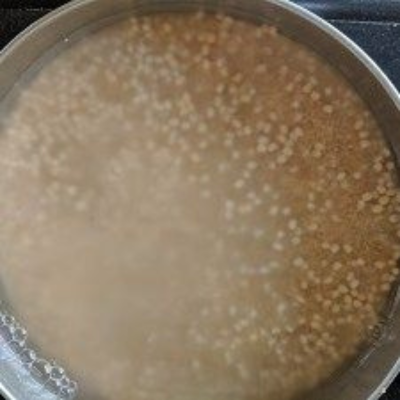
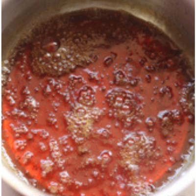

CONNECT WITH HEALTHY LIFE
CONNECT WITH HEALTHY LIFE
தேவையான பொருட்கள்:
செய்முறை:
1. வெந்தயத்துடன் பீஜே தினை அரிசிஉளுத்தம் பருப்பு தனித்தனியாக 6 முதல் 7 மணி நேரம் ஊறவைக்கவும்.

2. தண்ணீரை வடிகட்டி நன்றாக அரைக்கவும். உளுத்தம்பருப்பு, திணை அரிசி, வெந்தய விதை கலவையை ஒரு கிண்ணத்திற்கு மாற்றவும், நன்கு கலக்கவும், கடல் உப்பு சேர்த்து,
மாவை நொதிக்க வைக்கவும் [தோராயமாக. 8 மணிநேரம், நொதித்தல் நேரம் பிராந்தியத்திற்கு பிராந்தியம் மற்றும் வானிலை நிலைமைகளுக்கு மாறுபடும்].
3. இட்லி தட்டில் எண்ணெய் தடவவும். இட்லி மாவை ஊற்றவும். பிறகு 10 நிமிடம் ஆவியில் வேக வைக்கவும்.
4. திணை அரிசி தோசைக்கு இதைப் போல் மாவை செய்து தோசை கல்லில் ஊற்றவும் தேங்காய் சட்னி மற்றும் சாம்பாருடன் சூடாக பரிமாறவும்.

தேவையான பொருட்கள்:
செய்முறை:
1. பாசிப்பருப்பை வெரும் வாணலியில் சேர்த்து அடுப்பில் வைத்து மிதமான சூட்டில் வறுத்து எடுக்கவும்.
2. பீஜே தினை அரிசிபாசிப்பருப்பை தண்ணீரில் நன்கு கழுவி பத்து நிமிடங்கள் ஊற வைக்கவும்.
3. பின்னர் ஒரு அகலமான பாத்திரத்தில் தண்ணீர் சேர்த்து அடுப்பில் வைத்து கொதிக்கவிடவும். அதில் திணை அரிசி, பாசிப்பருப்பை சேர்த்து மூடிவைக்கவும்.
4. நன்கு கொதிக்கும் போது அடுப்பை மிதமான சூட்டில் வைத்து வேக விடவும். பதினைந்து நிமிடங்கள் வேக வைக்கவும். உப்பு சேர்க்கவும். அவ்வப்போது கலந்து விடவும்.
கொஞ்சம் நெய் சேர்க்கவும்.
5. பின்னர் வாணலியை அடுப்பில் வைத்து நெய் சேர்த்து சூடானதும் நறுக்கிய இஞ்சி,பச்சை மிளகாய், கறிவேப்பிலை சேர்த்து, மிளகு,சீரகம் சேர்த்து பொன்னிறமாக வதக்கவும்.
6. நெய்யில் வதக்கிய பொருட்களை வேகும் பொங்கலில் சேர்த்து நன்கு கலந்து விடவும்.
7. பின்னர் முந்திரியை அதே நெய்யில் வறுத்து சேர்க்கவும். எல்லாம் சேர்த்தவுடன் பொங்கலை நன்கு கலந்து விட்டு இறக்கினால் மிகவும் சுவையான,சத்தான,
ஆரோக்கியமான திணை பொங்கல் தயார்.
தேவையான பொருட்கள்:
செய்முறை:
1. கடாயில் எண்ணெயை சூடாக்கி, கடுகு, உளுத்தம்பருப்பு மற்றும் சீரகத்தைப் போட்டு, அத்துடன் கறிவேப்பிலையைச் சேர்க்கவும்.
2. வெங்காயம், மிளகாய் சேர்த்து ஒரு நிமிடம் வதக்கவும்.
3. கேரட்,பட்டாணி சேர்த்து இரண்டு நிமிடங்கள் சமைக்கவும்.
4. பீஜே தினை ஊற்றி நன்கு கிளறவும். தண்ணீர், உப்பு சேர்த்து கொதிக்க வைக்கவும். அது வேகும் வரை 15 நிமிடம் மூடி வைக்கவும்.
 5. தேங்காய், கொத்தமல்லி தழை சேர்த்து நன்கு கலக்கவும்.பிறகு சூடாக பரிமாறவும்.
5. தேங்காய், கொத்தமல்லி தழை சேர்த்து நன்கு கலக்கவும்.பிறகு சூடாக பரிமாறவும்.

தேவையான பொருட்கள்:
செய்முறை:
1. முதலில் வெல்லத்தை 1/4 கப் நீரில் போட்டு அடுப்பில் வைத்து பாகு போன்று செய்து கொள்ள வேண்டும்.அதனை வடிகட்டி தனியாக வைத்துக் கொள்ள வேண்டும்.

2. பீஜே தினையை நீரில் 1 மணிநேரம் ஊற வைத்து, பின் நீரை முற்றிலும் வடித்து, ஊறிய தினையை மிக்ஸியில் போட்டு நன்கு மென்மையாக அரைத்துக் கொள்ள வேண்டும்.
3. குறிப்பாக மாவானது ஓரளவு கெட்டியாக இருக்க வேண்டும்.பின் அதனை ஒரு பாத்திரத்தில் ஊற்றி, அத்துடன் அரிசி மாவு, தேங்காய், வெல்லப் பாகு, உப்பு மற்றும்
சிறிது தண்ணீர் சேர்த்து நன்கு கலந்து, 3 மணிநேரம் ஊற வைத்து, பின் அதில் பேக்கிங் சோடா சேர்த்து கலந்து கொள்ள வேண்டும்.
4. அடுத்து பணியாரக் கல்லை அடுப்பில் வைத்து, சூடேற்ற வேண்டும்.
5.கல்லானது சூடானதும், குழிகளில் எண்ணெய் தடவி, பின் மாவை ஊற்றி, மூடி வைத்து 2-3 நிமிடம் வேக வைக்க வேண்டும்.
6. பின் ஒரு கம்பியால் அதனை திருப்பிப் போட்டு, மீண்டும் 3 நிமிடம் வேக வைத்து இறக்கினால், தித்திக்கும் தினை பணியாரம் ரெடி!!!